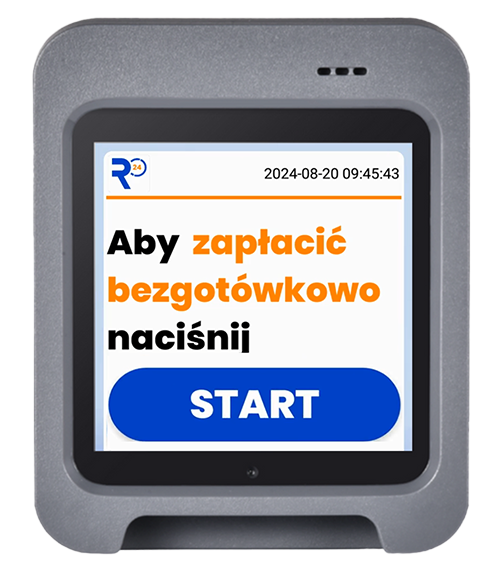
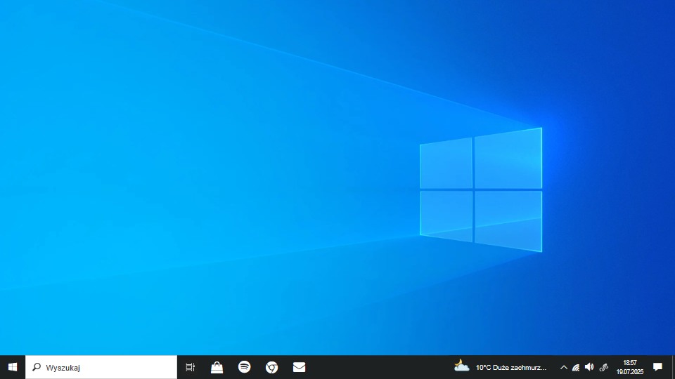
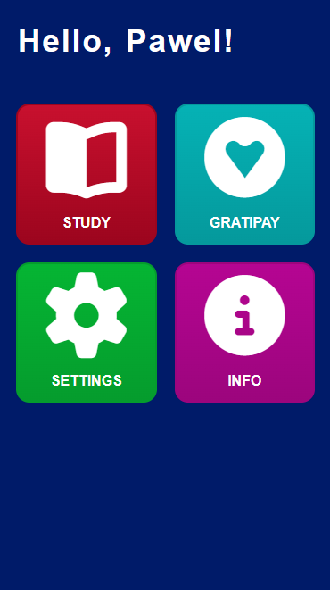
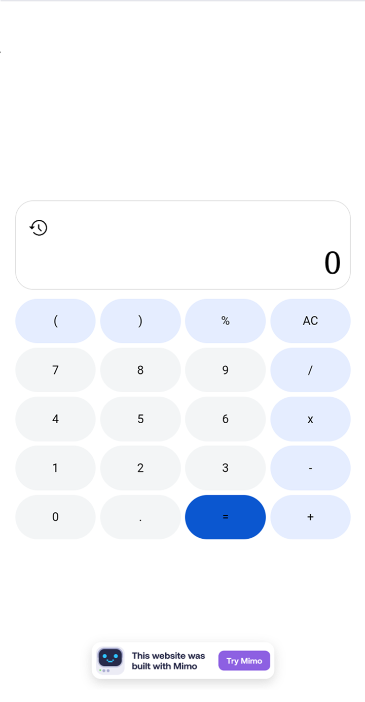
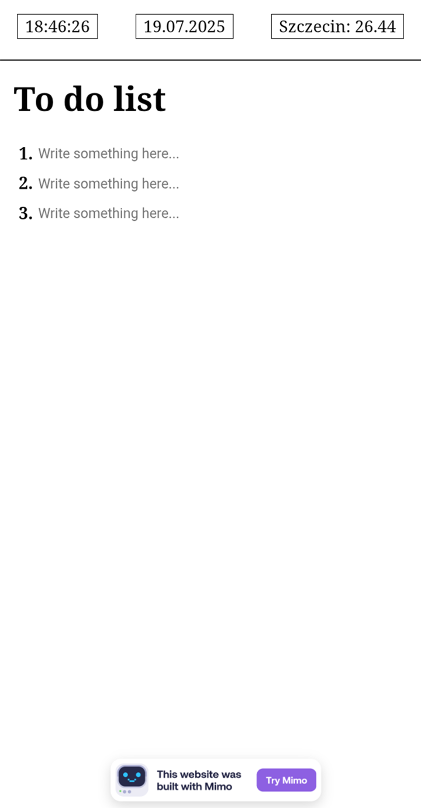

O mnie
Moja przygoda z IT zaczęła się od składania komputerów, co z czasem przerodziło się w pasję do programowania. Fascynują mnie logiczne wyzwania i zadania wymagające analitycznego myślenia. Od ponad dwóch lat łączę intensywną naukę z pracą na pełen etat, co nauczyło mnie samodyscypliny oraz dobrej organizacji czasu. Jestem zdeterminowany, by stale rozwijać swoje umiejętności - szczególnie w zakresie tworzenia nowoczesnych aplikacji frontendowych.
Student II roku studiów inżynierskich na kierunku Informatyka
Uniwersytet WSB Merito w Warszawie
(Pierwszy rok powtórzony ze względu na przeniesienie i różnicę programową)
W trakcie studiów poznałem podstawy Pythona, algorytmy sortowania i wyszukiwania, działanie systemów operacyjnych (m.in. Linux) oraz podstawy sieci komputerowych. Zdobytą wiedzę traktuję jako solidną bazę do dalszego rozwoju w kierunku tworzenia nowoczesnych aplikacji frontendowych.
Umiejętności
Programowanie i technologie webowe
- JavaScript (ES6+), TypeScript, HTML5, CSS3
- Codewars - 278 rozwiązanych zadań algorytmicznych (4 kyu, TOP 5%) - link do profilu
- React.js, Node.js, Express.js
- REST API, JSON, integracje systemów
- Python - podstawy
- Bash, PowerShell, CMD
- Git - kontrola wersji
Bazy danych
- MySQL, Microsoft SQL Server (MSSQL)
- SQL - zapytania, procedury składowane, operacje na danych
- HeidiSQL, MySQL Workbench
Systemy operacyjne i administracja
- Linux, Windows
- SSH, PuTTY, WinSCP, RealVNC, UltraVNC
- Diagnostyka i rozwiązywanie problemów technicznych
Systemy operacyjne i administracja
- Podstawy sieci TCP/IP i protokołów sieciowych
- Diagnostyka połączeń i zdalne zarządzanie urządzeniami
Sprzęt komputerowy
- Montaż, modernizacja i diagnostyka komputerów PC
- Instalacja i konfiguracja systemów operacyjnych
- Konfiguracja podzespołów komputerowych
Grafika i oprogramowanie
- Adobe Photoshop, Adobe Illustrator, Figma
- 2 lata doświadczenia w projektowaniu grafik dla twórców YouTube
- ActivePresenter, Screen Ruler, Color Picker
- Microsoft Office (Excel, Word, PowerPoint)
Umiejętności miękkie
- Samodzielne rozwiązywanie problemów
- Umiejętność pracy zespołowej i samodzielnej
- Systematyczność, odpowiedzialność i samodyscyplina
- Szybkie przyswajanie nowych technologii
Certyfikaty
- HTML & CSS - Mimo
- JavaScript - Mimo
- Python - Mimo
- Python AI Development - Mimo
Języki
- Polski - ojczysty
- Angielski - C1 (czytanie dokumentacji technicznej, komunikacja)
Dodatkowe osiągnięcia
- MathTrainer - 5. miejsce w światowym rankingu spośród ponad 250 000 użytkowników
Doświadczenie
15.09.2025 - 16.11.2026
Rozwój i utrzymanie systemu zarządzania automatami vendingowymi, obejmującego aplikację webową, backend, bazy danych oraz integracje z urządzeniami.
Zakres obowiązków
- Tworzenie i rozwój interfejsów użytkownika w React.js
- Rozwój backendu w Node.js i Express.js
- Projektowanie i modyfikowanie procedur SQL w MySQL i MSSQL
- Tworzenie i integracja endpointów REST API
- Diagnostyka błędów i rozwój istniejących funkcjonalności
- Zdalna administracja urządzeniami Linux przez SSH
Wybrane realizacje
- Rozwój modułu obsługi faktur i integracji z KSeF
- Rozbudowa panelu zarządzania terminalami płatniczymi
- Implementacja konfiguracji impulsów terminali
- Rozwój raportów, filtrów i eksportu danych
- Implementacja funkcji zarządzania sprzedażą w automatach
- Projektowanie i modernizacja interfejsów administracyjnych
Wykorzystane technologie
JavaScript, TypeScript, React.js, Node.js, Express.js, MySQL, MSSQL, REST API, JSON, Git, Linux, Bash, SSH
Konfigurator impulsów terminali

Konfigurator impulsów dla terminali płatniczych, zrealizowany w ramach rozwoju systemu Vendim. Przygotowałem wizualizację terminala w CSS i React, odwzorowując wygląd rzeczywistego urządzenia oraz jego ekranów. W panelu można definiować przyciski z własnymi nazwami, cenami, kanałami i liczbą impulsów, konfigurować wejścia i wyjścia oraz testować wygląd interfejsu w podglądzie przed wysłaniem konfiguracji na urządzenie.
Wykorzystane technologie:
- React.js, JavaScript (formularze i interaktywny podgląd terminala)
- HTML5, CSS3 (odwzorowanie ekranu, układ przycisków i animacje)
- Node.js, Express.js, REST API (obsługa i walidacja konfiguracji impulsów)
- MySQL, SQL (tabele i procedury składowane dla konfiguracji kanałów impulsów)
- JSON, Bash, SFTP (generowanie plików pulse_config.json i task.json, publikacja na terminale)
Edytor motywów i wygaszaczy automatów
Rozwój edytora motywów i wygaszaczy ekranów w systemie Vendim. Odtworzyłem wygląd rzeczywistego interfejsu automatu w HTML i CSS, tworząc podgląd w panelu administracyjnym umożliwiający porównanie układu i działania ekranu z urządzeniem. W dedykowanej zakładce można dodawać, edytować i usuwać motywy, zmieniać nagłówki, stopki i grafiki oraz zarządzać wygaszaczami. Konfiguracje wygaszaczy zapisywane są w bazie danych w formacie JSON, a następnie przesyłane i aktualizowane na automatach za pomocą skryptów Bash. Na urządzeniu dane są również zapisywane w lokalnej bazie danych.
Wykorzystane technologie:
- React.js, React Hooks, React-Bootstrap (formularze, motywy i stany podglądu)
- HTML5, CSS3 (CSS Grid, Flexbox, odwzorowanie ekranów V10 i V11)
- JavaScript, HTML5 Video API (podgląd MP4, timery, kolejność wygaszaczy)
- Node.js, Express.js, Multer (REST API, obsługa i walidacja plików)
- MySQL, SQL, JSON (procedury składowane, zapis motywów i wygaszaczy)
- Linux, Bash, SSH (synchronizacja ustawień z automatami)
Cupid Parasite - Fanmade
Interaktywny ekran dialogowy inspirowany stylistyką gry Cupid Parasite. Odtworzyłem wygląd interfejsu visual novel, dodając animowane wyświetlanie tekstu, mruganie i ruch ust postaci oraz wybory wpływające na przebieg rozmowy. Kolejne etapy dialogu i reakcje interfejsu są obsługiwane dynamicznie w React.
Wykorzystane technologie:
- React.js, TypeScript (komponenty, etapy dialogu i obsługa wyborów)
- React Hooks (useState, useEffect, useRef - zarządzanie stanem i animacjami)
- HTML5, CSS3 (odwzorowanie interfejsu, warstwy graficzne i animacje)
- JavaScript (setInterval, setTimeout, animowane pisanie tekstu i mimika postaci)
- Adobe Photoshop, Screen Ruler (bieżące dopasowywanie marginów przy pomocy Live Servera)
Windows UI Clone

Interaktywny klon pulpitu systemu Windows 10, zbudowany jako aplikacja webowa. Zegar w czasie rzeczywistym i stylizacja inspirowana oryginalnym UI Microsoftu.
Wykorzystane technologie:
- HTML5
- CSS3 (Flexbox, media queries, animacje)
- JavaScript (Date, DOM, dynamiczny zegar)
- Ikony (Fontello / Ikony obrazkowe)
- Responsywność (RWD)
EnglishTiles - nauka angielskiego

Aplikacja webowa do nauki języka angielskiego z interfejsem zaprojektowanym z myślą o urządzeniach mobilnych. Strona główna umożliwia przechodzenie między ekranami Study, Gratipay, Settings i Info. W module Study przygotowałem interaktywny quiz słownictwa z pytaniami wielokrotnego wyboru, sprawdzaniem odpowiedzi i przechodzeniem do kolejnych pytań po poprawnym wyborze.
Wykorzystane technologie:
- React.js, TypeScript (TSX, komponenty i typowanie danych)
- Vite (środowisko programistyczne i budowanie aplikacji)
- React Router DOM (nawigacja między ekranami)
- React Hooks - useState (stan quizu i weryfikacja odpowiedzi)
- HTML5, CSS3 (CSS Grid, Flexbox, gradienty, układ mobilny)
- Font Awesome (ikony interfejsu)
Calculator

Aplikacja kalkulatora stworzona w technologii frontendowej, inspirowana wyglądem i działaniem kalkulatora Google. Umożliwia wykonywanie podstawowych działań arytmetycznych (w tym z nawiasami i procentami), a także zapisuje historię obliczeń, którą użytkownik może wyświetlić w dowolnym momencie.
Wykorzystane technologie:
- HTML5
- CSS3 (Grid, media queries, animacje naciśnięć)
- JavaScript (DOM, dynamiczna obsługa działań, historia obliczeń)
- Stylizacja UI na wzór aplikacji mobilnych
- Responsywność (RWD)
Weather - API

Aplikacja webowa łącząca w sobie trzy funkcje: zegar w czasie rzeczywistym, aktualną datę oraz dynamicznie pobierane dane pogodowe z wykorzystaniem API OpenWeatherMap. Interfejs został zaprojektowany w minimalistycznym stylu, z czytelnymi polami wyświetlania informacji oraz prostą listą zadań typu „To Do List”.
Wykorzystane technologie:
- HTML5
- CSS3 (Flexbox, prosty layout, style formularzy)
- JavaScript (Date, dynamiczny zegar i data, fetch API)
- API pogodowe (OpenWeatherMap)
- Responsywność podstawowa
O MNIE
WYKSZTAŁCENIE
UMIEJĘTNOŚCI
DOŚWIADCZENIE